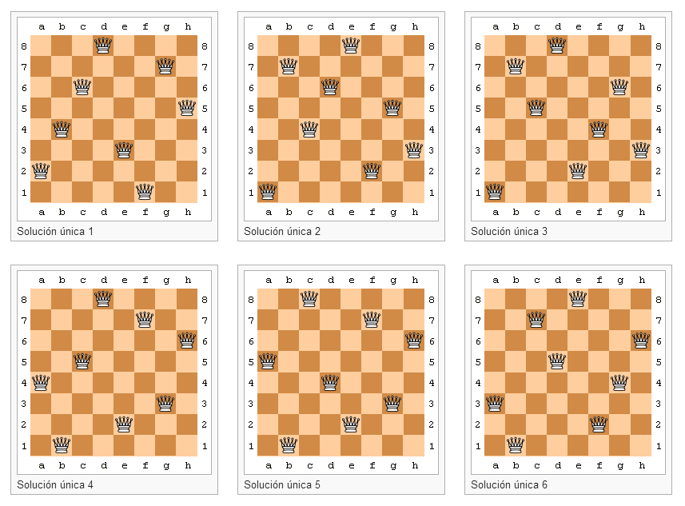
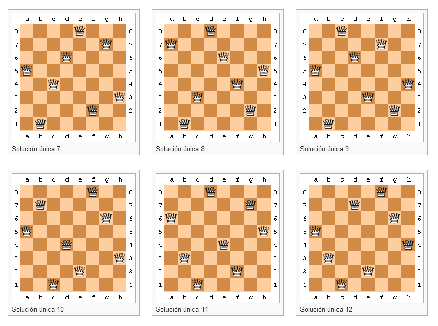

Ayuda
Requisitos mínimos del sistema
- Procesador pentium IV o superior
- RAM 512MB
- Java 8 o superior
- Windows 7 o superior, Linux**
- HeadPhones o Parlantes***
***(Necesarias para las notificaciones con sonido);
DCM Queen [8-Queens Problem Backtracking]|dacopanCMScreenshoot interactivo
Vuelta atrás, (Backtracking) es una estrategia para encontrar soluciones a problemas que satisfacen restricciones. El término "backtrack" fue acuñado por primera vez por el matemático estadounidense D. H. Lehmer en la década de 1950.
Esencialmente, la idea es encontrar la mejor combinación posible en un momento determinado, por eso, se dice que este tipo de algoritmo es una búsqueda en profundidad. Durante la búsqueda, si se encuentra una alternativa incorrecta, la búsqueda retrocede hasta el paso anterior y toma la siguiente alternativa. Cuando se han terminado las posibilidades, se vuelve a la elección anterior y se toma la siguiente opción (hijo [si nos referimos a un árbol]). Si no hay más alternativas la búsqueda falla. De esta manera, se crea un árbol implícito, en el que cada nodo es un estado de la solución (solución parcial en el caso de nodos interiores o solución total en el caso de los nodos hoja).
Vuelta atrás se usa en la implementación de los lenguajes de programación tales como Lenguaje de programación Planner y Prolog. Además, se usa en los análisis sintácticos de los compiladores. Su uso en inteligencia artificial ha sido muy importante, dando lugar a nuevos tipos de búsquedas como el A estrella.
El problema de las ocho reinas tiene 92 soluciones, de las cuales 12 son esencialmente distintas, es decir las 92 soluciones existentes se pueden obtener a partir de simetrías, rotaciones y traslaciones de las 12 soluciones únicas, que se muestran a continuación:  
- F1: Help
- y otros más, prueba y descubre...